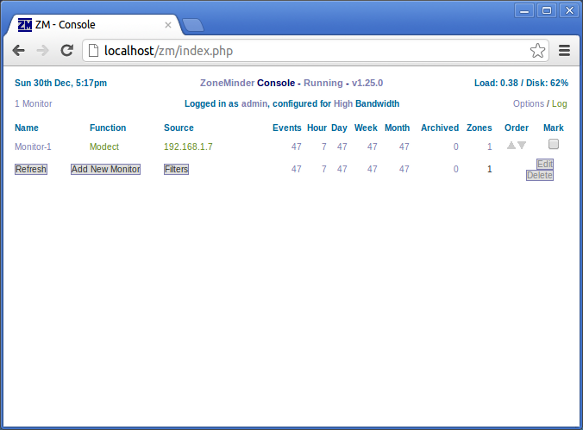
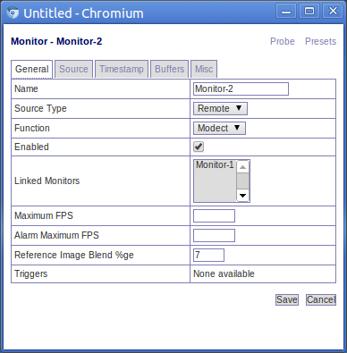
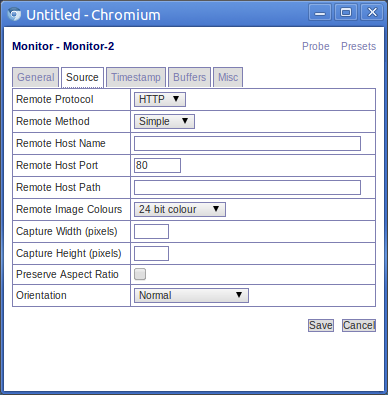
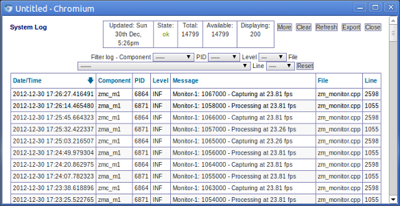
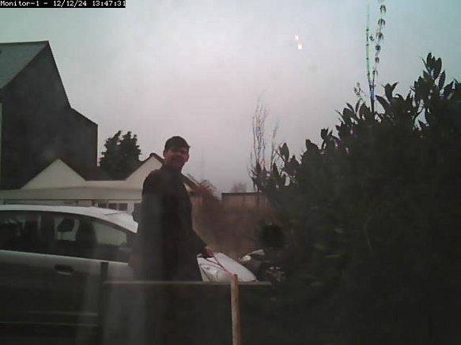
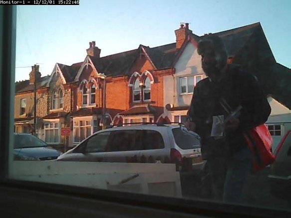
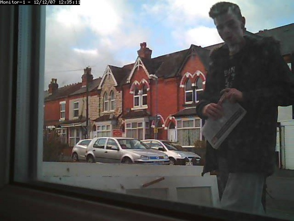
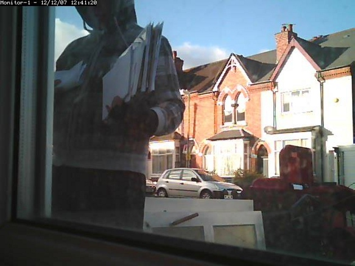
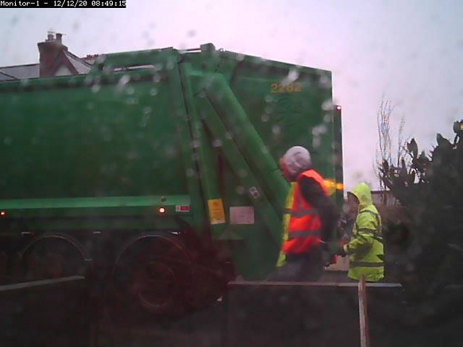

Zoneminder on Ubuntu
Ever thought about building your own CCTV system? All you need is free and open source software Zoneminder, a free Linux distribution such as Ubuntu, Lubuntu or Debian, an old PC and a camera.
What is Zoneminder?
Zoneminder is an open source application used for CCTV and other security and surveillance applications. You can use it to monitor your home or work property or to monitor your pets while you are out, whatever you can imagine really (look at the screenshots on the Zoneminder homepage for more ideas).
The implementation is basically a Perl/PHP web app using Apache and MySQL (LAMP as we call it in the trade). If you have ever set up a website or blog or something then you will understand it instantly. It is a nice concept as using shared nothing web application and system administration principles it can scale up indefinitely to very large commercial uses.
If you are the kind of person who already has a home wifi or wired network and a home server or desktop on all the time, then Zoneminder will fit in great, as the only extra electricity you will be using will be the camera (or cameras) themselves.
Zoneminder is really flexible and configurable, which is fantastic but also means that you do have to configure it for your own needs. If you have quite a minimalist IT setup at home with no machines running most of the time (e.g. just a iPad in your Thames-side studio apartment), then using Zoneminder at home might be overkill, as you can probably buy a pre-made embedded home CCTV system that runs off a single plug and does not require configuration.
Zoneminder stores the recorded video as single frame images in a simple data layout on your filesystem and the web application allows you to configure it and view the cameras in real time and view recorded footage. The metadata is stored in the MySQL database.
What kind of camera do I need?
It seems you can use anything. If you have a simple USB webcam lying around at home, that is all you need to get started. If then you like Zoneminder you can then get a posher camera later if you want.
There different types of cameras depending on how serious you are. The more serious people put a card in their computer (such as the Hauppauge Impact VCB/PCI Composite AV Input card ) and use real high definition video cameras.
I personally use a ‘netcam’ (I have the model called TRENDnet SecurView Wireless N Internet Camera if you want to be precise) which is basically a webcam with a built in wireless card (and or ethernet socket). So you can put the camera anywhere you can power it and it will log onto your wireless network like any other device. You don’t have to run AV cables back to your computer.
[The same advice that I always give concerning routers and other network devices applies here: if you buy such a netcam, check its website for any firmware updates, especially security updates, before you add the device to your network. These things are little network connected computers after all, containing a proprietary operating system. This system may have been written by a guy with a masters in network security from MIT, or it could have been written by a subcontractor earning £1 per hour in who knows where. The problem with all proprietary software is that there is no public peer review (unlike with open source software). So check the vendor for security updates.]
If a burglar manages to get in and picks up the netcam, there are no wires to follow back and so no clue as to where the images go. One can also use backup software or write a few bash scripts to copy images to a remote server or the cloud if you are in a high crime area. If you have a really good internet connection at both ends, you can put netcams in your relatives’ houses and allow your Zoneminder server to grab the images off.
What kind of server do I need?
By ‘server’ in the article, I just mean the computer that will have Zoneminder installed, as opposed to any other computers, tablets, phones or even TVs you might use to operate the system on a day to day basis.
I suppose (in theory) you could use any operating system that can run Perl, Apache and Mysql. However, the assumption from here is that you will be using a Linux distribution, because Windows and OS X are, to put it bluntly, completely crap in this server role and a massive hassle to work with. If you have a Linux Desktop already at home, then that will probably work fine.
In my experience, the server does not need to particularly powerful for a simple home setup. I am using a low-powered PC from 2006 which runs Zoneminder and lots of other apps quite nicely.
You don’t have to have a graphical system, you can use something like Ubuntu Server if you want. However, you will need some computer or phone with a web browser to control Zoneminder and view the saved images/video, this does not have to be a Linux computer (toy operating systems work fine as clients).
Source vs Packages
A couple of years ago I installed Zoneminder on Ubuntu 11.04 by downloading the source. Now over Christmas I had a spare 20 mins and re-installed the OS. I like backing up and reinstalling occasionally as it gives a nice clean system. This time I went for Ubuntu 12.10 in the Lubuntu flavour (I will talk about that in the future). Then I had to put all the data and programs back on.
Last time I installed Zoneminder from source, this time I thought I would try the Ubuntu packages. This guide should work for any Ubuntu or Debian type system, but your mileage may vary.
Lets get started.
Firstly, we need to install the zoneminder package, you can do this in the graphical “software centre” or you can just open a terminal and use this command:
sudo apt-get install zoneminder
On a fresh system without Mysql, it will ask you to set a Mysql root password. Next it configures the nullmailer mail relay, I just accepted the default answers. Then it stops returns control of the shell.
Apache settings
Now we need to let Apache know what is going on. If you are already using Apache to show websites on this system, you can integrate Zoneminder in a way that does not clash with your other sites.
However, on a fresh system, you can do this:
sudo ln -s /etc/zm/apache.conf /etc/apache2/conf.d/zoneminder.conf
sudo /etc/init.d/apache2 reload
Now when you go in your web browser to http://localhost/zm/ you can now see the console.
If you have installed Zoneminder to a non-graphical server distribution, then obviously use the IP address or domain name instead of localhost when you access Zoneminder from your external computer or phone or whatever.
Camera Setup
When you click on Add New Monitor, you get a web form that looks like this:
The most important field here is “source type”, the setting chosen affects the options available in the source tab (see below). Since I am using a netcam, I set it to remote.
Another important field is ‘Function’. Modect is short for ‘motion detect’, it records when there is motion, other options include constantly recording and just monitoring without recording.
Now we come onto the source tab, as shown below:
This window allows you to define the hostname of your camera. So for a netcam we give it the host name of the camera, which in a home setup will probably be a private ip address (e.g. 192.168.x.x). Look up your camera on the Supported hardware section of the Zoneminder wiki to find what settings you need to add here.
Log driven configuration
You can read the Zoneminder ‘system log’ by clicking on a link unsurprisingly called ‘log’ (as shown in the main console screenshot above). This gives as a log viewer, as shown below:
The way I configure Zoneminder is by reading the activity log and keep changing configuration until it stops moaning.
So I started with this error:
Can't open memory map file /dev/shm/zm.mmap.1, probably not enough space free: Permission denied
This due to the default settings of Ubuntu (or Lubuntu in my case). There is a kernel setting called shmmax which determines the maximum size of a shared memory segment i.e. the total amount of RAM that can be used when Zoneminder is grabbing images from the video driver.
[You may vaguely remember doing this before because some ‘enterprise’ (i.e. bloated) databases and other business software often requires this too.]
So on my fresh install, shmmax was set to 32MB by default and it needed to be more than 96MB, so I increased it to 128MB to be sure.
How much you need depends on how posh your camera is. The higher resolution the camera, the more RAM Zoneminder will need to use.
A quick hack way is to just override the number in /proc, obviously this only works on the live system, when you reboot the setting is gone. However, it is a quick way to play about with the setting:
sudo su
echo 536870912 >/proc/sys/kernel/shmmax
exit
You can work the setting by trial and error but you can also just to look in the Zonemaster wiki, or to google it, as it is likely that someone else is already using Zonemaster with the same model of camera you have.
I restarted zonemaster:
sudo /etc/init.d/zonemaster restart
And it solved the problem. So because I then knew it worked, (as advised by Zonemaster wiki), I made a config file to do this on boot:
sudo su
echo kernel.shmmax = 536870912 >/etc/sysctl.d/60-kernel-shm.conf
sysctl -p
exit
Next up in the log was the error:
waiting for capture daemon
This is fixed by adding the web server user to the video group:
sudo adduser www-data video
(Why isn’t this sorted out by the .deb package? And why is it not given its own user?)
Just keep attacking the log errors until it is all happy really.
Configuring Image Location
By default the images are bunged into: /usr/share/zoneminder/events which is a symbolic link to /var/cache/zoneminder/events/1/
In theory, to change this you need to change the setting ZM_DIR_EVENTS which is the first setting under ‘Options’ then ‘Paths’. Use an absolute path and make sure the destination has the correct permissions.
In reality, I never had much luck changing this. When it tries to read the events back, it seems to be somehow hardcoded to the old location which is then appends with this location. If anyone has the answer to this let me know.
So instead I have had more luck just ignoring this configuration option and instead myself replacing the symbolic link /usr/share/zoneminder/events with my own:
sudo rm /usr/share/zoneminder/events
ln -s my_better_location /usr/share/zoneminder/events
By default there is no lockdown on the web interface, so if the machine is web accessible, you will want to change that (options > OPT_USE_AUTH). When you first turn on authentication, the username is admin and password is admin. You will probably want to change that too! (Options > Users - only appears when authentication is turned on).
There are lots of other things you can configure like the sensitivity of the motion detection and which regions of the image to watch and which to ignore it etc. However, we have covered everything specific to using Zoneminder on an Ubuntu/Debian system using the .deb packages. The Zoneminder wiki is very useful and comprehensive so dig around there to find out more.
Zoneminder in action
Now if you have read this far you deserve to have some silly pictures.
Having a CCTV camera at the front of your house educates you a lot about what happens in your local community. I have learned all sorts of things from watching back footage at random. Most of the cool snaps I probably cannot post online for legal and taste reasons.
The first revelation is that a large amount of people look through your windows. Here is a fairly tame and blurry one.
I have had people come right up to the camera and look through the windows. One person even wrote down details in a pad.
Where does the box load of paper spam come from? Well Zoneminder will tell you. Here is a guy promoting a pizza company:
Here is a free ‘newspaper’ full of ads:
Fortunately, we still have real postmen. But they seem to be far more informally dressed than Postman Pat:
I think he was a special temp over Christmas. Sadly they all seem to have these granny trolleys now instead of the cool Pashley bicycles they used to have.
Fortunately, the dustmen come and take all this rubbish away, even in heavy rain:
Over to you
So setting up Zoneminder takes a little fiddling but it is good fun and reassuring to have the ability to look back in time at what was happening in front of your house in the past. If you have a go or have tried Zoneminder before, please let everyone know how you got on and how I could improve this guide. Bonus points for silly pictures.